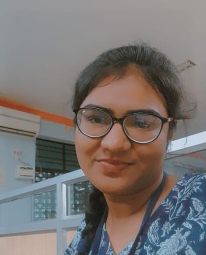

|  |
Maddubai Gari Hazira SultanaFront-end web Developer Python Programmer |
I'm a student in Computer Science and Engineering at Jawaharlal Nehru technological University,Ananthapuram, where my academic journey converges with a passion for innovation and problem-solving. Proficient in Front-End Web Developing, I am committed to applying theoretical knowledge to practical challenges. My collaborative spirit, coupled with a dedication to continuous improvement, positions me as a valuable contributor to engineering projects. Eager to start on a professional journey where simplicity meets excellence
| Course | Institute | Year | Result |
|---|---|---|---|
| B.Tech in CSE | JNTU,Ananthapuram | 2025 | 87.4 |
| 12 thGrade | Abhyas Junior college,Pdtr,Kadapa | 2021 | 97 |
| 10 thGrade | T.V.R High School,Pdtr,Kadapa | 2019 | 10 |
1.HTML,CSS,JavaScript
2.Responsive design and CSS framework(e.g. Bootstrap)
3.Front-end libraries(e.g.React,Angular)
1.Python Programming language
2.Database knowledge(e.g. SQL,ORM)
3.Familiarity with cloud platforms(e.g.AWS,Azure)
Iot based Motion Detection System
Community Service Project on Plastic Waste Management
Fun game uising HTML,CSS,Javascript
https://github.com/sultanahazira34/try-to-not-laugh.yt
2022-June-25 : Introduction to Programming using Python from Microsoft
2023-Dec-1 : Learing Linux for LFCA from Coursera
2023-Aug-15 : Best Community Service Project for the Academic Year
Email : Hazirasultana444@gmail.com
Github:github.com/sultanahazira34
Phno : 8143810302